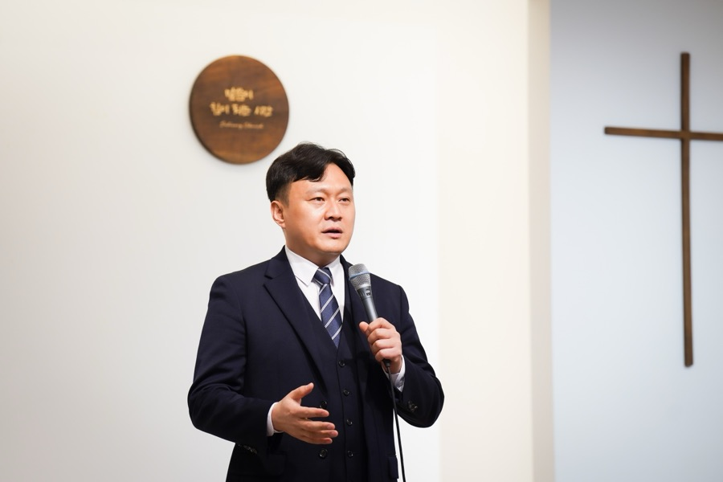
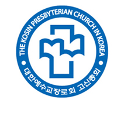
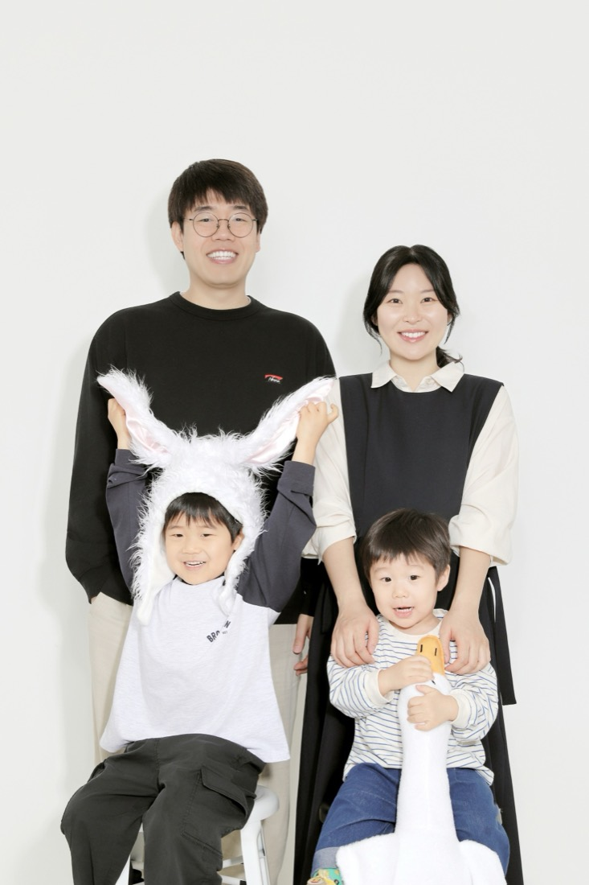

큰빛 POINT
큰빛교회와 함께하는 신앙의 여정
큰빛교회 예배
그리스도의 말씀이 풍성히 거하여 모든 지혜로 서로 가르치며 권면합니다 — 골 3:16
| 예배명 | 시간 | 장소 |
|---|---|---|
| 영유아예배 | 주일 오전 10:00 | 본당 |
| 주일예배 | 주일 오전 10:45 | 본당 |
| 주일오후예배 | 주일 오후 1:00 | 본당 |
| 모임명 | 시간 | 장소 |
|---|---|---|
| 중고대청모임 | 주일 오후 1:30 | 모임방 |
| 매일저녁기도회 | 매일 오후 8:00 | 본당 |
섬기는 이
큰빛교회를 섬기는 담임목사 인사

최진용 목사
"지친 영혼이 쉼을 얻고 소망을 발견하는 곳"
성도 여러분, 그리고 우리 교회 홈페이지를 찾아주신 귀한 분들을
주님의 이름으로 환영합니다.
복잡하고 분주한 세상 속에서 잠시 발걸음을 멈추고 이곳을 찾으신
여러분의 마음 위에 하나님의 평강이 함께하시길 기도합니다.
우리 교회는 상처 입은 마음이 치유되고, 메마른 삶에 하늘의 위로가
흐르는 공동체가 되길 소망합니다.
혼자 걷는 길은 외롭지만, 함께 걷는 길은 소망이 있습니다.
이곳에서 예수 그리스도의 사랑을 경험하고, 인생의 참된 의미를
찾아가는 복된 여정을 함께 시작하시길 바랍니다.
당신을 기다리고 있겠습니다. 사랑하고 축복합니다.
약력
- 고신대학교 신학과
- 고려신학대학원 목회학
- 고신대학교 성경강해
- 저서: 『말씀체질』 / 『선교체질』 / 『구약파노라마』(공저)
교회 비전
큰빛교회가 지향하는 세 가지 방향
본질 위에 서서, 열방을 향해,
재림을 소망하는 교회
서문 — 우리의 정체성과 사명을 선언하며
이 비전 선언문으로, 우리는 우리 교회의 존재 이유와 나아갈 방향을 하나님과 세상 앞에 엄숙히 선포한다. 우리 교회는 단순한 물리적 건물이 아니라, 이 땅 위에 하나님의 거룩한 통치가 임하는 생명의 공동체이다. 우리는 이 문서를 통해 교회의 흔들리지 않는 기초가 무엇이며, 우리가 어디를 향해 나아가고, 궁극적으로 무엇을 소망해야 하는지를 천명한다.
앞으로 전개될 세 가지 핵심 가치, ‘성경적 교회’, ‘선교적 교회’, 그리고 ‘시대적 교회’는 우리의 모든 사역과 신앙을 이끌어갈 기둥이다. 이 가치들은 우리 공동체가 주님 오시는 그날까지 감당해야 할 거룩한 여정의 이정표가 될 것이다.
성경적 교회
"오직 기록된 하나님의 말씀으로 돌아가는 교회"
우리 교회는 성경 66권의 완전 영감설과 무오성을 믿으며, 개혁주의 신앙의 정수인 웨스트민스터 신앙고백서와 교리문답을 기초로 교회의 기초를 놓습니다. 사람의 철학이나 유행이 아닌, 성경적 예배모범과 교회의 표지가 살아 숨 쉬는 강단을 지향합니다.
선교적 교회
"복음의 불모지에 생명을 심는 개척 정신"
우리는 하나님께 받은 은혜를 내부에만 가두지 않고 담장 너머로 흘려보냅니다. 국내외 사역지는 물론, 영적 갈급함이 큰 신도시와 복음의 문이 좁은 일본 땅을 향해 그리스도의 사랑을 들고 나아갑니다.
시대적 교회
"다시 오실 신랑을 맞이하는 깨어 있는 신부"
지금은 영적인 밤이 깊어가는 마지막 때입니다. 우리는 요한계시록의 약속을 따라 시대를 분별하며, 재림의 소망을 품고 오늘을 살아갑니다. 막연한 두려움이 아닌, 영적 무장을 통해 세상 속에서 승리하는 종말론적 성도를 길러냅니다.
교단 소개
큰빛교회가 속한 교단을 소개합니다

큰빛교회가 속한 교단은
대한예수교장로회(고신)입니다.
고신교단은 일제 신사참배를 거부하다가 투옥되었던 17명의 목사와 성도들이 1945년 8월 17일에 출옥하며 시작되었습니다.
우리는 웨스트민스터 신앙고백서와 대소교리문답을 신앙의 표준으로 삼고, 하나님 중심, 성경 중심, 교회 중심의 생활원리로 살고 있습니다.
교회 선교
복음의 생명수를 담장 너머로 흘려보내는 사역
신도시 사역
겉으로는 현대적이고 물질적인 풍요를 누리지만, 내면에는 깊은 영적 갈급함을 느끼는 현대인들이 모여드는 신도시를 향해 나아가 '복음의 생명수'를 전합니다.
일본 선교
복음화율이 1% 미만인 '영적 불모지'인 일본을 가슴에 품고, 가장 가까운 이웃 나라인 그 땅에 복음의 씨앗을 심는 사역에 헌신합니다.
큰빛교회 파송 선교사

김으뜸 · 송찬미
"너희 중에 어떤 사람이 양 백 마리가 있는데 그 중의 하나를 잃으면 아흔아홉 마리를 들에 두고 그 잃은 것을 찾아내기까지 찾아다니지 아니하겠느냐" — 누가복음 15:4
- 가족 모두가 성령 충만하여 하나님 뜻대로 살아가기를
- 하나님과 늘 동행하여 하나님을 드러내는 삶 살기를
- 전도의 문이 열리며 복음을 담대하게 전할 수 있기를
- 일본을 향한 하나님의 마음을 늘 깨달아 일본을 더 사랑하기를
- 가족이 일본에 잘 적응하며 생활에 어려움이 없기를
큰빛교회 앨범
큰빛교회의 아름다운 순간들을 함께 나눕니다
교회 행사
큰빛교회와 함께하는 특별한 시간
교회 방송
언제 어디서나 함께하는 큰빛교회 예배
큰빛교회 유튜브 채널
주일예배, 주일오후예배 실시간 중계와 다시보기,
설교 말씀을 유튜브 채널에서 함께하실 수 있습니다.
오시는 길
큰빛교회로 오시는 방법을 안내해 드립니다
대중교통 안내
58-1(심야), 124, 128-1
강서구8-1, 강서구22
명지초교·명지중학교 정류장 하차
주차장 안내
교회 건물 지하 주차장 이용
또는 울림공원 주차장 이용